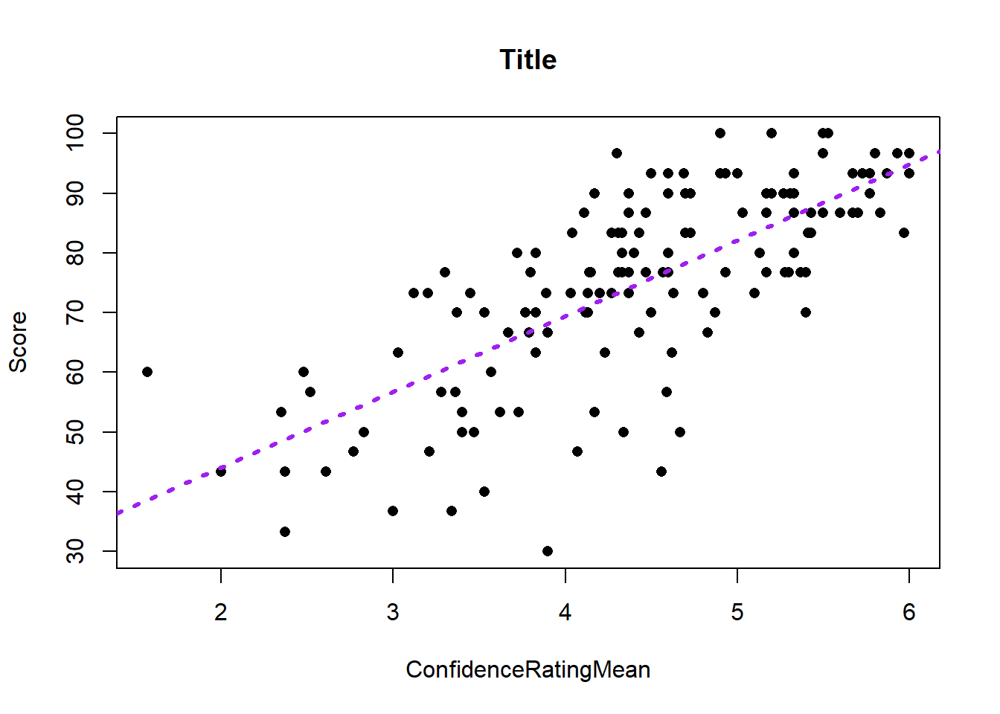
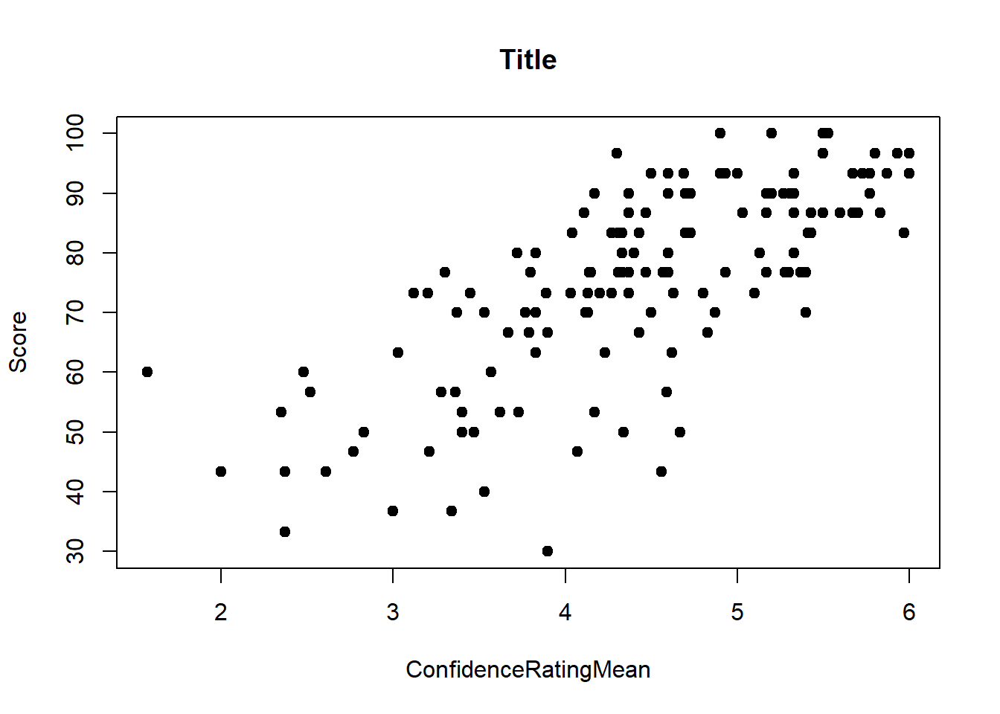
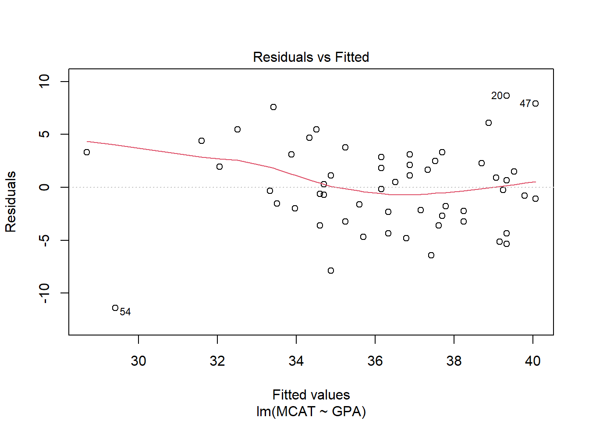
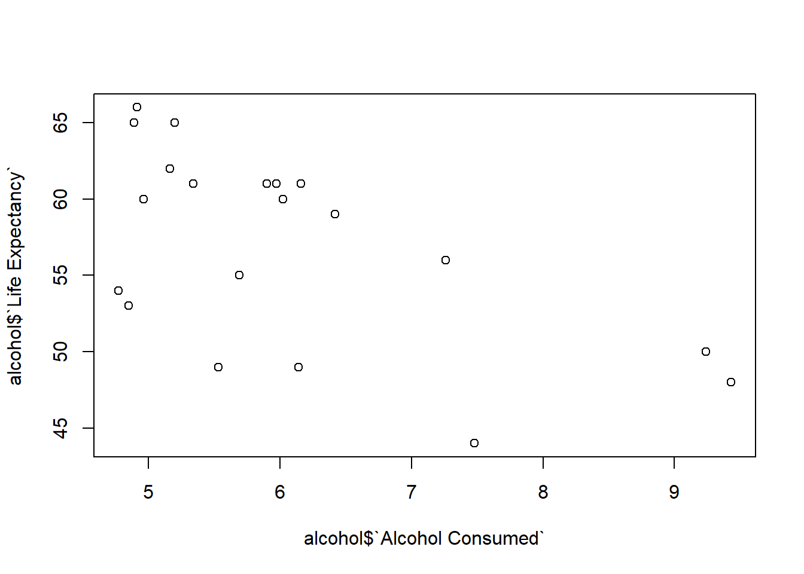
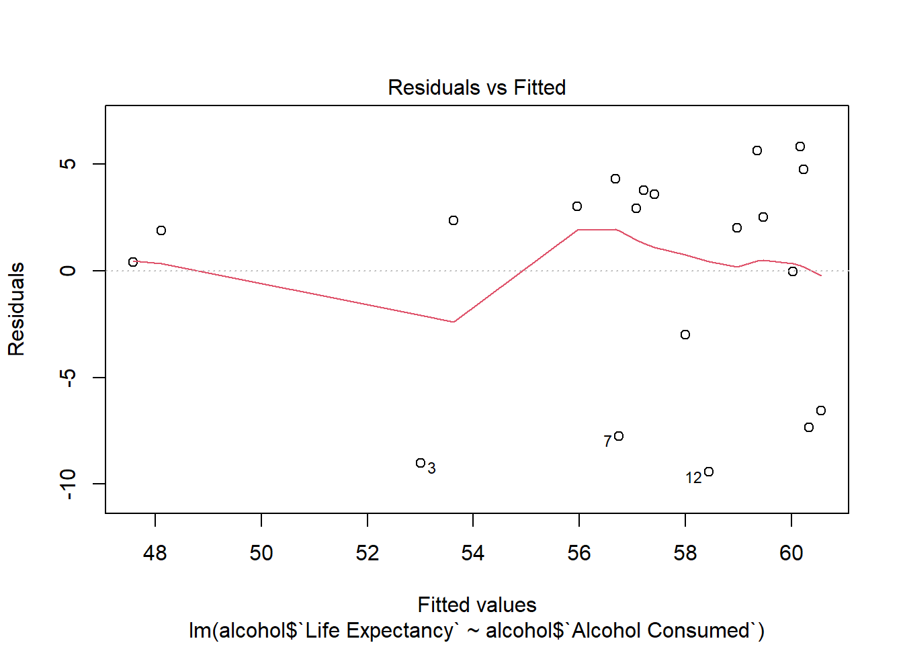
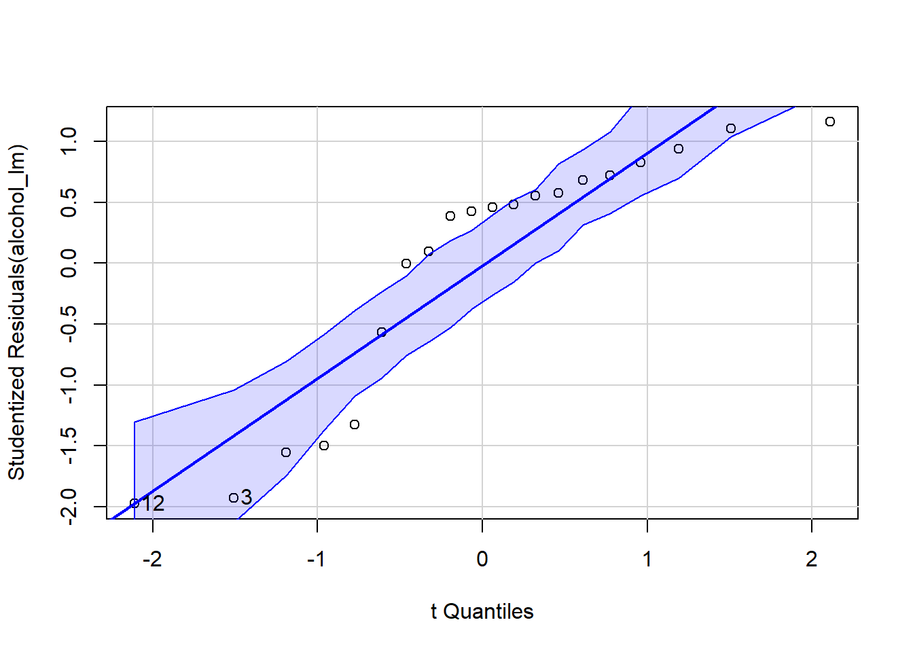

library(tidyverse)
library(mosaic)
library(rio)
library(car)
math <- import('https://byuistats.github.io/BYUI_M221_Book/Data/MathSelfEfficacy.xlsx')Simple Linear Regression
Review
Consider the relationship between Score on a math exam and a student’s self-reported Confidence Rating.
What is the explanatory (aka independent) variable?
Confidence
What is the response (aka the dependent) variable?
Score
Plot the relationship:
names(math)[1] "Gender" "Score" "ConfidenceRatingMean"
[4] "Comments" plot(Score ~ ConfidenceRatingMean, data = math)
Does the relationship appear linear?
What is the direction of the relationship?
What do you think is the strength of the relationship? (Strong/Moderate/Weak)
What is the correlation coefficient, r?
cor(Score ~ ConfidenceRatingMean, data = math)[1] 0.7278648Linear Equation
The correlation coefficient, r, tells us something about the direction and strength of a linear relationship.
Linear Regression allows us to find a functional relationship between X and Y. We can estimate the slope and intercept of the line that “best fits” the data and use that line to make predictions.
Recall that when we had a quantitative response variable and a categorical explanatory variable we could use the t.test() if the categorical variable had 2 levels or the aov() function if the categorical variable had multiple levels. We used the same notation for both:
t.test(y ~ x, data = dat) and aov(y ~ x, data = dat)
The aov() function output wasn’t as useful as the t.test() by itself, so we typically assigned a name to the aov() output then used summarize() to get the test statistic and p-value. We could also extract “residuals”.
The same paradigm works for estimating the linear relationship between 2 quantitative variables, but we need to introduce a new function: lm(). The ‘lm’ stands for “linear model”. The relationship notation remains the same:
lm(y ~ x, data = dat)
except x and y are both quantitative. Just like with aov() the lm() output by itself doesn’t give us test statistics and p-values. We will also use the summarize() function to get our test statistics.
Let’s fit a linear model estimating the slope and intercept of the line that best fits the relationship between Confidence Rating and Test Score:
math_lm <- lm(Score ~ ConfidenceRatingMean, data = math)
summary(math_lm)
Call:
lm(formula = Score ~ ConfidenceRatingMean, data = math)
Residuals:
Min 1Q Median 3Q Max
-38.200 -6.163 1.292 7.567 23.422
Coefficients:
Estimate Std. Error t value Pr(>|t|)
(Intercept) 18.690 4.610 4.054 8.4e-05 ***
ConfidenceRatingMean 12.695 1.022 12.424 < 2e-16 ***
---
Signif. codes: 0 '***' 0.001 '**' 0.01 '*' 0.05 '.' 0.1 ' ' 1
Residual standard error: 11.27 on 137 degrees of freedom
Multiple R-squared: 0.5298, Adjusted R-squared: 0.5264
F-statistic: 154.4 on 1 and 137 DF, p-value: < 2.2e-16confint(math_lm, level = .92) 4 % 96 %
(Intercept) 10.55863 26.82150
ConfidenceRatingMean 10.89262 14.49703The lm() output includes only the slope and the intercept.
How do we interpret the intercept of 18.69?
How do we interpret the slope of 12.69 in context?
What is the expected score on a test of someone who ranks themselves 5 in confidence?
Plotting the Regression Line
Scatter plots by themselves are nice, but we would also like to see the regression line. Simple graphics in R can be augmented by using some functions. The abline() function, when executed right after a graphing function can add lines. We’ve used this to add vertical lines and horizontal line already in class. We can also use this function to add a regression line. We simply insert our linear model output into the abline() function as follows:
plot(Score ~ ConfidenceRatingMean, data = math)
abline(math_lm)
Just as with the other plotting functions we’ve used, we can change the color, type and width of the line:
plot(Score ~ ConfidenceRatingMean, data = math, pch = 16, main = "Title")
abline(math_lm, col = "purple", lwd = 3, lty = 3)
Hypothesis Testing for Regression
A linear equation has 2 parameters: Slope and Intercept. In most situations, the intercept isn’t very interesting by itself and is often absurd. We are most interested in the slope
\[H_o: \beta_1 = 0\] \[H_a: \beta_1 \neq 0\]
These are the same for all regression questions.
To get the p-value and test statistics, we use the summary() function as we did with aov:
summary(math_lm)
Call:
lm(formula = Score ~ ConfidenceRatingMean, data = math)
Residuals:
Min 1Q Median 3Q Max
-38.200 -6.163 1.292 7.567 23.422
Coefficients:
Estimate Std. Error t value Pr(>|t|)
(Intercept) 18.690 4.610 4.054 8.4e-05 ***
ConfidenceRatingMean 12.695 1.022 12.424 < 2e-16 ***
---
Signif. codes: 0 '***' 0.001 '**' 0.01 '*' 0.05 '.' 0.1 ' ' 1
Residual standard error: 11.27 on 137 degrees of freedom
Multiple R-squared: 0.5298, Adjusted R-squared: 0.5264
F-statistic: 154.4 on 1 and 137 DF, p-value: < 2.2e-16We can also calculate confidence intervals for the slope by using the confint() function. This function requires you to tell it which model to extract a confidence intervals from. You can specify which parameter you’re interested in, and the level of confidence:
# input the model into the following function:
confint(math_lm, level = .95) 2.5 % 97.5 %
(Intercept) 9.573588 27.80654
ConfidenceRatingMean 10.674297 14.71535How do we interpret this confidence interval for a slope?
95% Confident that the true population slope is within (10.674297, 14.71535)
For every 1 unit increase in Confidence Rating, test scores go up by between (10.674297, 14.71535) on average.
Regression Requirements
There are certain requirements for all statistical tests to be valid. For means, we needed to make sure that the Central Limit Theorem applied. This meant that we had a large enough sample size (N>30) or that the population itself was normally distributed.
For ANOVA, we had to check that the residuals were normally distributed and that the population standard deviations were the same.
Regression analysis has 5 requirements to be valid. While this sounds daunting, in practice we can check most of them very quickly.
- Relationship between X and Y is Linear
- The residuals, \(\epsilon\), are normally distributed
- The Variance of the error terms is constant for all values of X
- The X’s are fixed and measured without error (i.e. X’s can be considered as known constants)
- The observations are independent
The linear relationship is assessed visually with the scatter plot. If there is obvious curvature or non-linearity then fitting a line isn’t the best model.
We check the normality of the residuals with a qqplot() exactly as with the aov() output.
The constant Variance is checked with a new plot, that looks at how the predicted values relate to the residuals. This is important because we want our predictions to be “wrong” about the same regardless of the value of the prediction. We’re looking for random scatter.
Requirements 4 cannot be analyzed directly. It is important because X is the independent variable. If there is uncertainty about the input, then the simple linear regression might not be the most appropriate model.
Requirement 5 also cannot be analyzed, but random sampling is usually satisfies this requirement.
# Requirement 1: Check for linear relationship
plot(Score ~ ConfidenceRatingMean, data = math, pch = 19, main = "Title")
# Req 2: Normality of residuals:
qqPlot(math_lm$residuals)
[1] 37 89# Req 3: Constant variance (look odd patterns). When you put lm() output into the plot function it gives you several different plots. The residual plots we're most interested in are 1 and 2
plot(math_lm, which = 1)
Your Turn
manatees <- import('https://raw.githubusercontent.com/byuistats/Math221D_Cannon/master/Data/manatees.csv')
acura <- import('https://raw.githubusercontent.com/byuistats/Math221D_Cannon/master/Data/acuraMDX_price_vs_mileage.csv')
alcohol <- import('https://raw.githubusercontent.com/byuistats/Math221D_Cannon/master/Data/life_expectancy_vs_alcohol_consumption.csv')
mcat <- import('https://raw.githubusercontent.com/byuistats/Math221D_Cannon/master/Data/mcat_gpa.csv')plot(MCAT ~ GPA, data = mcat)
cor(MCAT ~ GPA, data = mcat)[1] 0.5414202lm_mcat <- lm(MCAT ~ GPA, data = mcat)
lm_mcat
Call:
lm(formula = MCAT ~ GPA, data = mcat)
Coefficients:
(Intercept) GPA
3.923 9.104 summary(lm_mcat)
Call:
lm(formula = MCAT ~ GPA, data = mcat)
Residuals:
Min 1Q Median 3Q Max
-11.4148 -2.5168 -0.1519 2.6653 8.6616
Coefficients:
Estimate Std. Error t value Pr(>|t|)
(Intercept) 3.923 6.922 0.567 0.573
GPA 9.104 1.942 4.688 1.97e-05 ***
---
Signif. codes: 0 '***' 0.001 '**' 0.01 '*' 0.05 '.' 0.1 ' ' 1
Residual standard error: 4.088 on 53 degrees of freedom
Multiple R-squared: 0.2931, Adjusted R-squared: 0.2798
F-statistic: 21.98 on 1 and 53 DF, p-value: 1.969e-05confint(lm_mcat) 2.5 % 97.5 %
(Intercept) -9.961361 17.80724
GPA 5.209161 12.99928abline(lm_mcat)
qqPlot(lm_mcat$residuals)
[1] 54 20plot(lm_mcat, which = 1)
plot(lm_man, which = 1)Error in eval(expr, envir, enclos): object 'lm_man' not foundqqPlot(lm_man)Error in eval(expr, envir, enclos): object 'lm_man' not foundplot(manatees$Manatees ~ manatees$`Power Boats (in 1000's)`)
abline(lm_man)Error in eval(expr, envir, enclos): object 'lm_man' not foundsummary(lm_man)Error in h(simpleError(msg, call)): error in evaluating the argument 'object' in selecting a method for function 'summary': object 'lm_man' not foundconfint(lm_man)Error in eval(expr, envir, enclos): object 'lm_man' not found# Alcohol v
plot(alcohol$`Life Expectancy` ~ alcohol$`Alcohol Consumed`)
cor(alcohol$`Life Expectancy` ~ alcohol$`Alcohol Consumed`)[1] -0.5881589alcohol_lm<- lm(alcohol$`Life Expectancy` ~ alcohol$`Alcohol Consumed`)
plot(alcohol$`Life Expectancy` ~ alcohol$`Alcohol Consumed`, main = "Impact of Alcohol on Life Expectancy", xlab = "Alcohol", pch = 19, col = "darkblue", ylab = "Life Expectancy")
abline(alcohol_lm, col = "darkred", lwd=2, lty =2)
text(x=8, y = 60, label = "LE = 73.851 - 2.786*Alcohol")
plot(alcohol_lm, which = 1)
qqPlot(alcohol_lm)
[1] 3 12summary(alcohol_lm)
Call:
lm(formula = alcohol$`Life Expectancy` ~ alcohol$`Alcohol Consumed`)
Residuals:
Min 1Q Median 3Q Max
-9.443 -3.889 2.202 3.636 5.829
Coefficients:
Estimate Std. Error t value Pr(>|t|)
(Intercept) 73.851 5.605 13.176 1.11e-10 ***
alcohol$`Alcohol Consumed` -2.786 0.903 -3.085 0.00638 **
---
Signif. codes: 0 '***' 0.001 '**' 0.01 '*' 0.05 '.' 0.1 ' ' 1
Residual standard error: 5.313 on 18 degrees of freedom
Multiple R-squared: 0.3459, Adjusted R-squared: 0.3096
F-statistic: 9.52 on 1 and 18 DF, p-value: 0.006379confint(alcohol_lm) 2.5 % 97.5 %
(Intercept) 62.075406 85.6271489
alcohol$`Alcohol Consumed` -4.683409 -0.8890535Determine which variable is your response/dependent variable and which is the explanatory/independent variable.
Make a scatterplot.
What is the nature of the relationship? (direction/strength/linearity)
Calculate the correlation coefficient.
Perform a linear regression analysis. Be sure to check the regression requirements (linearity, normality of residuals, constant variance).
What is the conclusion of your hypothesis?
What is the confidence interval for the slope? Give a 1-sentence interpretation in context of your research question.